Equipos, fallas, órdenes de trabajo, preventivo, repuestos, compras e indicadores en un solo sistema: en la oficina, en planta y en el teléfono del técnico. Para quien mantiene sus propios equipos y para quien da mantenimiento a otros.
Equipment, failures, work orders, preventive maintenance, spare parts, purchasing and KPIs in one system: in the office, on the plant floor and on the technician's phone. For companies that maintain their own equipment and for those that maintain others'.
531 pruebas automáticas al 27-oct-2026.
531 automated tests as of 27-Oct-2026.
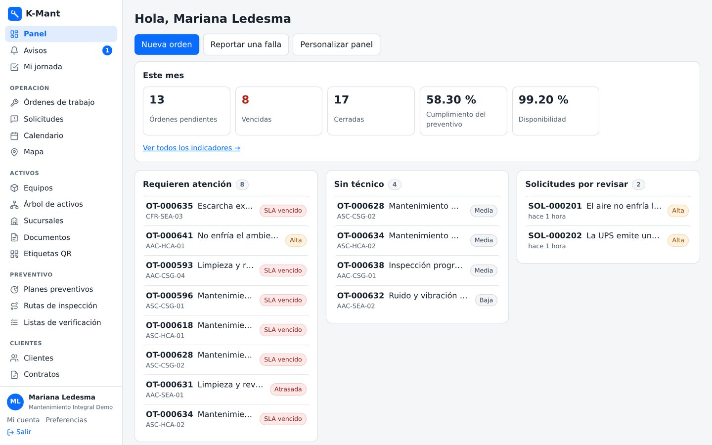
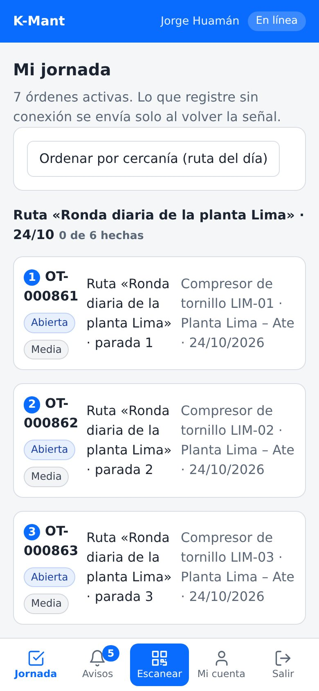
El panel de una empresa de servicio: órdenes pendientes y vencidas, cumplimiento del preventivo, disponibilidad y lo que requiere atención. Datos inventados.
The dashboard of a service company: pending and overdue orders, preventive compliance, availability and what needs attention. Made-up data; the interface is in Spanish.
La jornada del técnico en su teléfono: su ruta del día, en orden de recorrido. Datos inventados.
The technician's day on a phone: the day's route, in visiting order. Made-up data; the interface is in Spanish.
Y en paralelo, el preventivo genera sus órdenes solo cuando vence cada plan.
And in parallel, preventive maintenance creates its own orders when each plan falls due.
Hoja de vida de cada equipo, componentes en árbol, contadores, etiqueta QR o NFC, mapa e importación desde hoja de cálculo.
A record for each piece of equipment, component tree, meters, QR or NFC tag, map and spreadsheet import.
Cualquiera reporta una falla desde el teléfono, incluso sin cuenta, escaneando el QR del equipo.
Anyone reports a failure from a phone, even without an account, by scanning the equipment's QR code.
Tablero por estado, cuadrillas, hora límite de respuesta y de solución, y escalado de lo crítico. Nunca dos órdenes abiertas sobre un equipo.
Board by status, crews, response and resolution deadlines and escalation of critical work. Never two open orders on one piece of equipment.
Horas, repuestos, listas de verificación obligatorias, fotos, vídeo, firma e informe PDF con código de autenticidad.
Hours, parts, mandatory checklists, photos, video, signature and a PDF report with an authenticity code.
Su jornada y su ruta del día. Sin señal, guarda y envía al volver la cobertura. Se instala como una aplicación.
Their day and route. With no signal, it saves and sends when coverage returns. Installs like an app.
Planes por tiempo o por uso que generan su orden solos al vencer, semáforo, calendario y rutas de inspección.
Time- or usage-based plans that create their own order when due, traffic light, calendar and inspection routes.
Existencias por almacén, reservas por orden, reposición sugerida, compras con aprobación y códigos de cada proveedor.
Stock per warehouse, reservations per order, suggested restocking, approved purchases and each supplier's codes.
Clientes con sedes y contratos, cotizaciones que el cliente aprueba y un portal donde sigue su servicio.
Customers with sites and contracts, quotes the customer approves and a portal to follow their service.
Disponibilidad, MTBF, MTTR, cumplimiento del preventivo y del servicio, paradas y costos, en PDF u hoja de cálculo.
Availability, MTBF, MTTR, preventive and service compliance, downtime and costs, as PDF or spreadsheet.
Sus palabras, país, moneda, zona horaria, calendario laboral, su marca en los informes y roles propios.
Your own words, country, currency, time zone, work calendar, your brand on reports and custom roles.
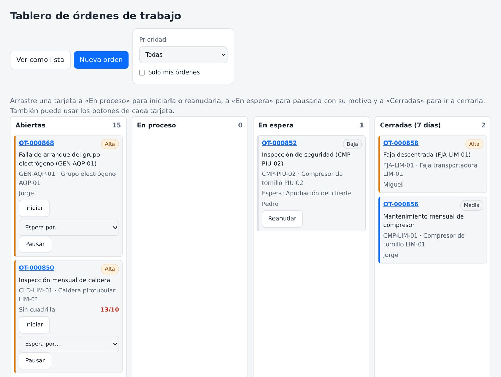
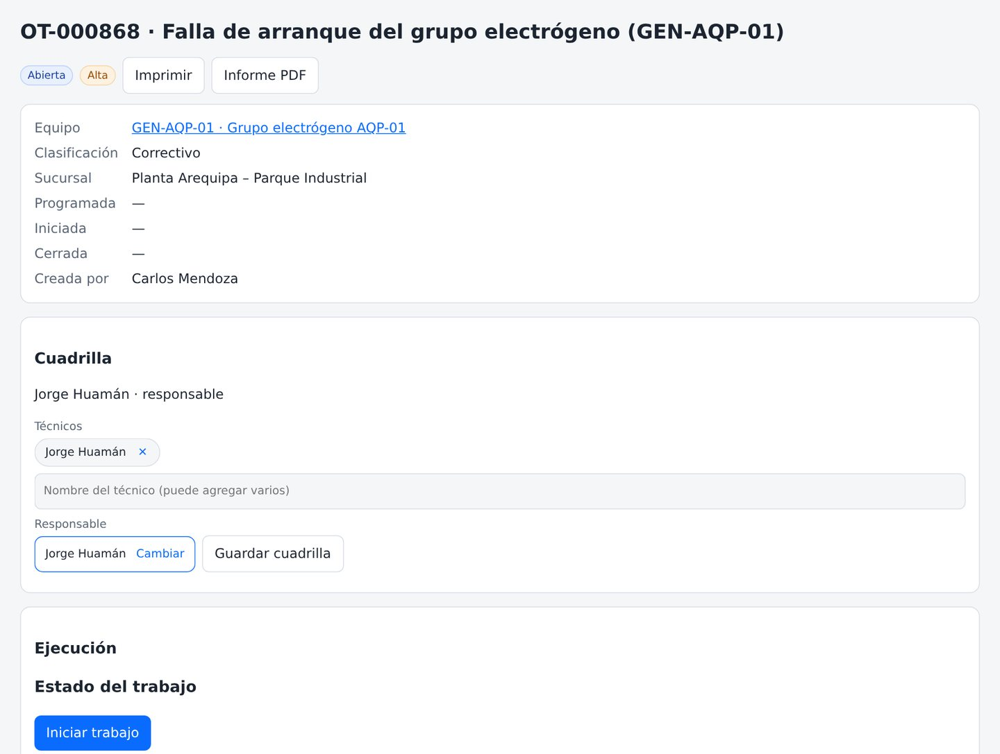
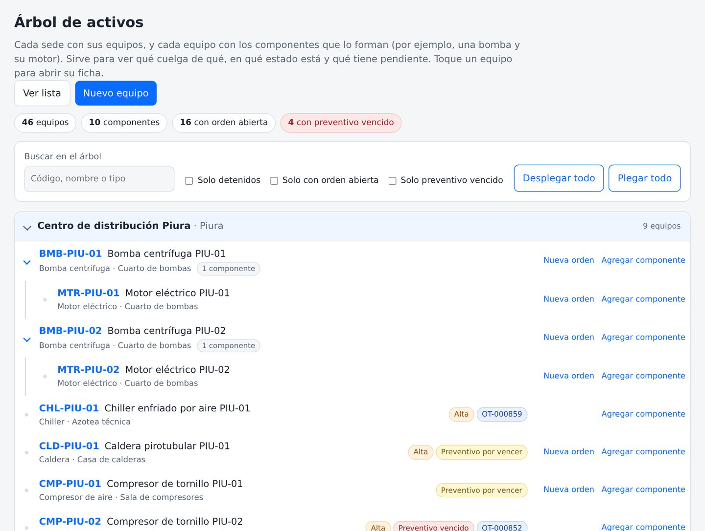
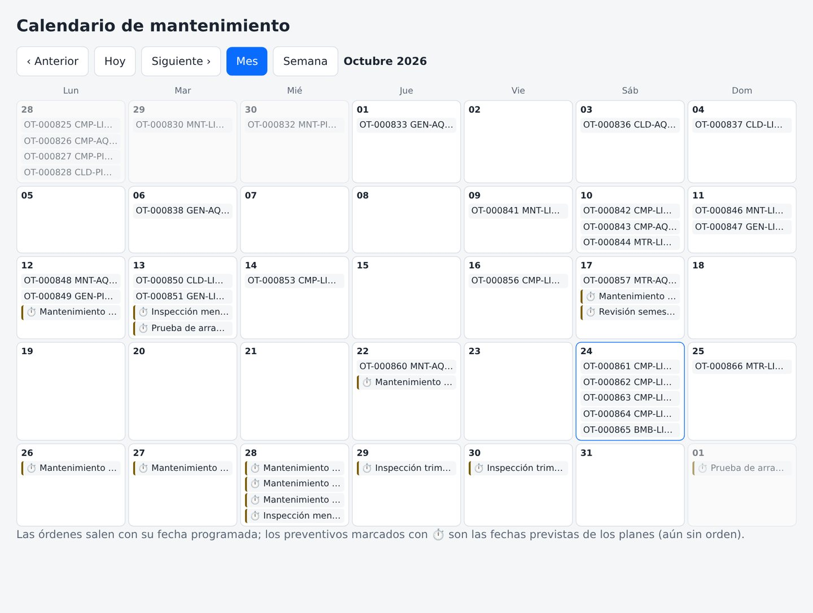
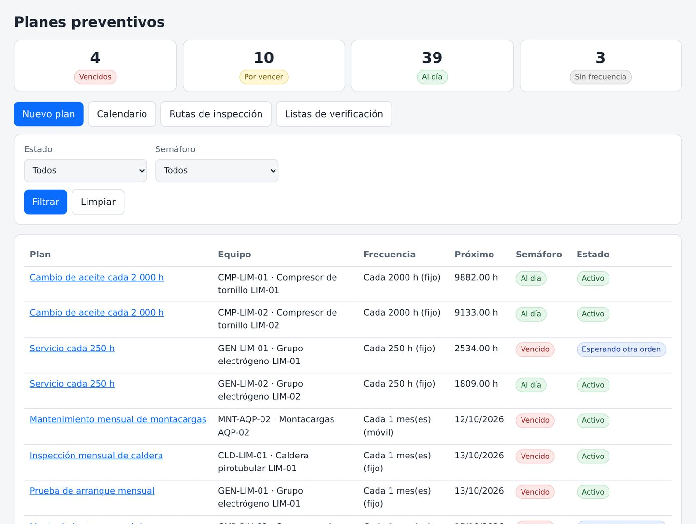
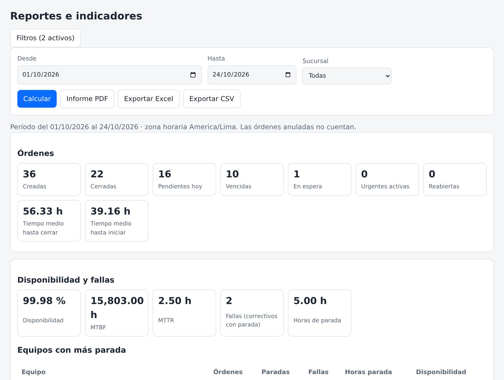
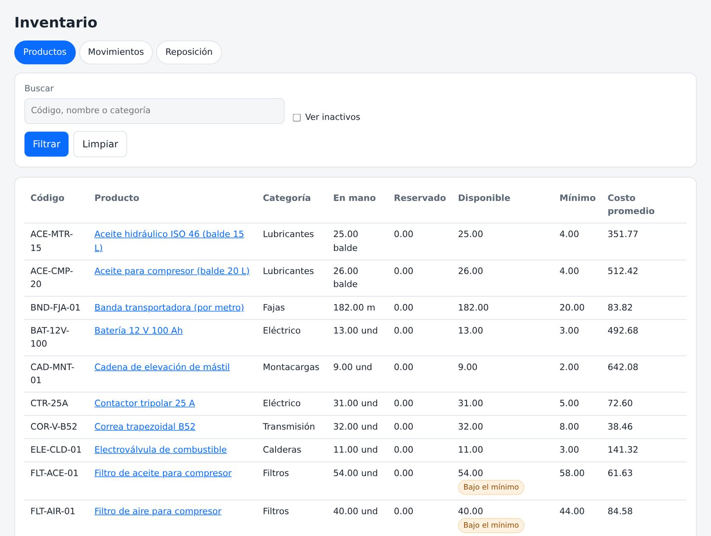
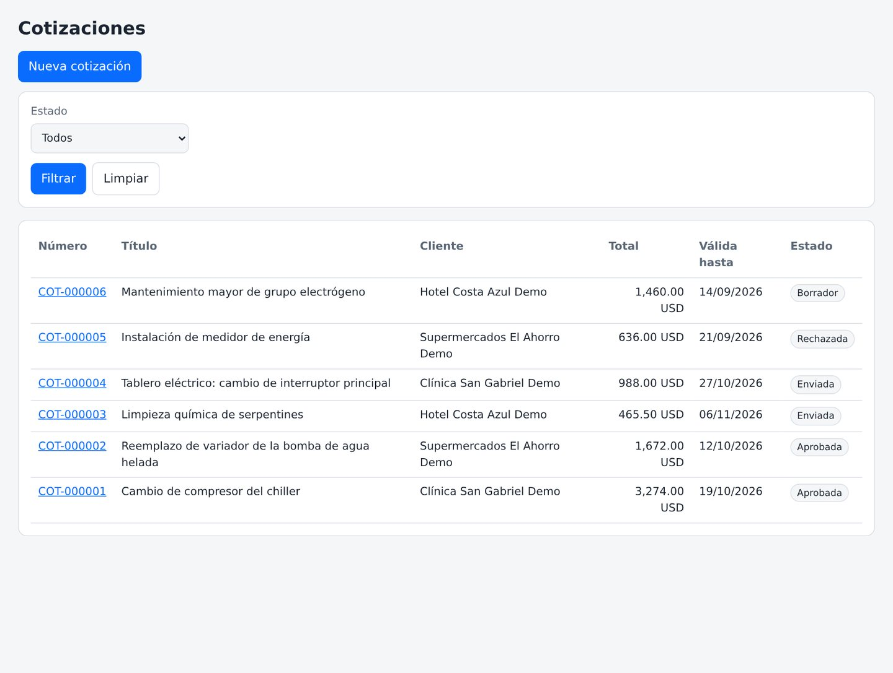
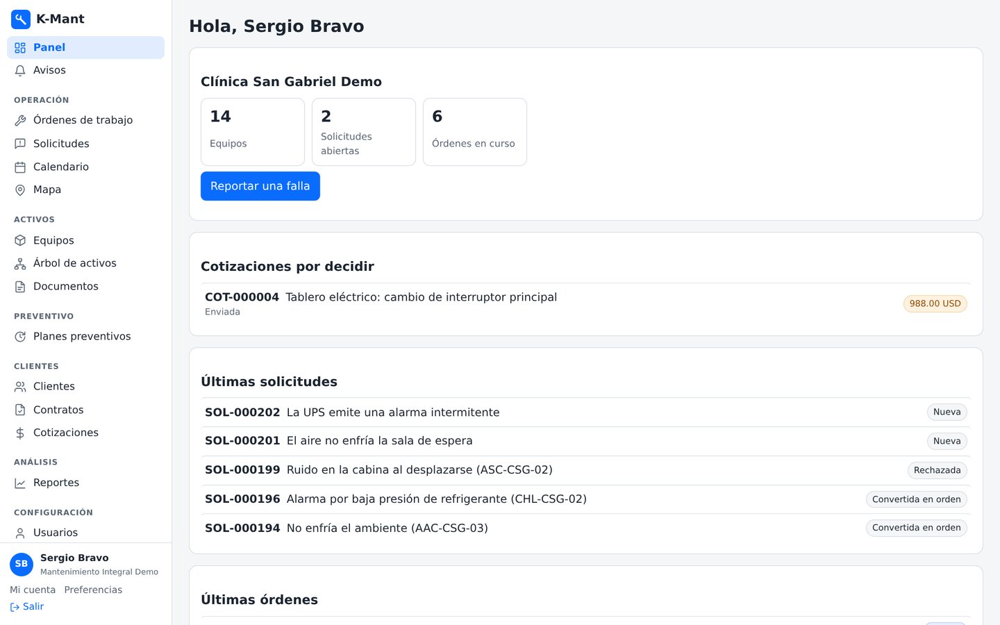
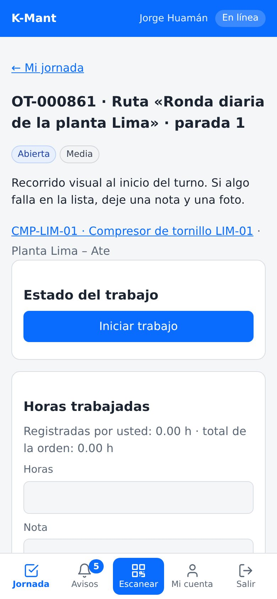
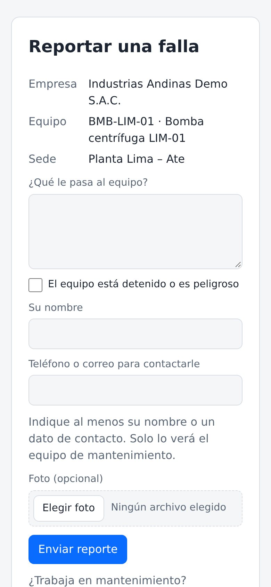
Ensayo con empresas, equipos, personas y órdenes inventados.
Test environment with made-up companies, equipment, people and orders.
| Administrador | Administrator | Empresa, usuarios, roles, configuración y aprobación de compras.Company, users, roles, settings and purchase approval. |
| Supervisor / planificador | Supervisor / planner | Solicitudes, órdenes, cuadrillas, equipos, preventivo, rutas, listas y clientes.Requests, orders, crews, equipment, preventive, routes, checklists and customers. |
| Técnico | Technician | Su jornada en el teléfono: ejecuta y cierra sus órdenes.Their day on the phone: works and closes their orders. |
| Subcontratista | Subcontractor | Solo las órdenes que le asignan.Only the orders assigned to them. |
| Solicitante | Requester | Reporta fallas y sigue sus solicitudes.Reports failures and follows their requests. |
| Almacenista | Storekeeper | Inventario, movimientos, almacenes y reposición.Inventory, movements, warehouses and restocking. |
| Comprador | Buyer | Compras y proveedores.Purchases and suppliers. |
| Solo lectura / auditor | Read-only / auditor | Consulta todo sin cambiar nada.Sees everything, changes nothing. |
| Usuarios del cliente | Customer users | Administrador, supervisor, solicitante o solo lectura, solo con lo de su empresa.Administrator, supervisor, requester or read-only, limited to their own company. |
Además, cada empresa puede crear roles propios permiso a permiso.
Each company can also create its own roles, permission by permission.
| Aislamiento | Isolation | Multiempresa: ninguna empresa ni cliente ve los datos de otro.Multi-company: no company or customer ever sees another's data. |
| Auditoría sellada | Sealed audit trail | Cada cambio queda encadenado con una huella digital que se puede verificar.Every change is chained with a verifiable digital fingerprint. |
| Acceso | Access | Código de 6 dígitos para los administradores al entrar desde un dispositivo nuevo.A 6-digit code for administrators signing in from a new device. |
| Órdenes | Orders | Un equipo no admite dos órdenes abiertas; el preventivo espera o se suma, nunca duplica.A piece of equipment never has two open orders; preventive waits or merges, never duplicates. |
| Evidencias | Evidence | Fotos, vídeo y documentos con su huella; informe PDF con código de autenticidad.Photos, video and documents with their fingerprint; PDF report with an authenticity code. |
| Sus datos | Your data | Respaldo completo de la empresa en un ZIP, cifrado con contraseña si se desea.Full company backup as a ZIP, password-encrypted if desired. |
| Integración | Integration | API en JSON o XML, con claves por sistema.JSON or XML API, with keys per system. |
| Calidad | Quality | Más de 500 pruebas automáticas cubren permisos, aislamiento, órdenes, preventivo, inventario e informes.Over 500 automated tests cover permissions, isolation, orders, preventive, inventory and reports. |
| PHP | Lógica: órdenes, preventivo, inventario, compras, permisos, informes y API (21.200 líneas), y las pantallas (4.800 líneas de plantillas).Logic: orders, preventive, inventory, purchasing, permissions, reports and API (21,200 lines), plus the screens (4,800 lines of templates). |
| JavaScript | Trabajo sin conexión, escaneo, tablero y app instalable (750 líneas).Offline work, scanning, board and installable app (750 lines). |
| SQL | Almacenamiento multiempresa.Multi-company storage. |
Sus equipos, sus fallas típicas y su forma de trabajar.
Your equipment, your typical failures and the way you work.